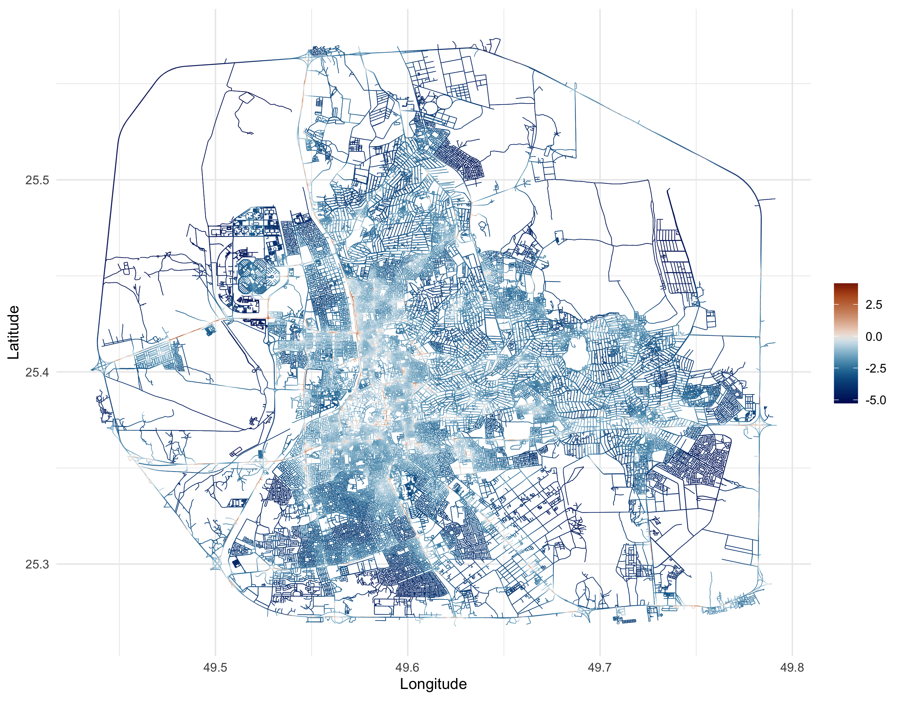
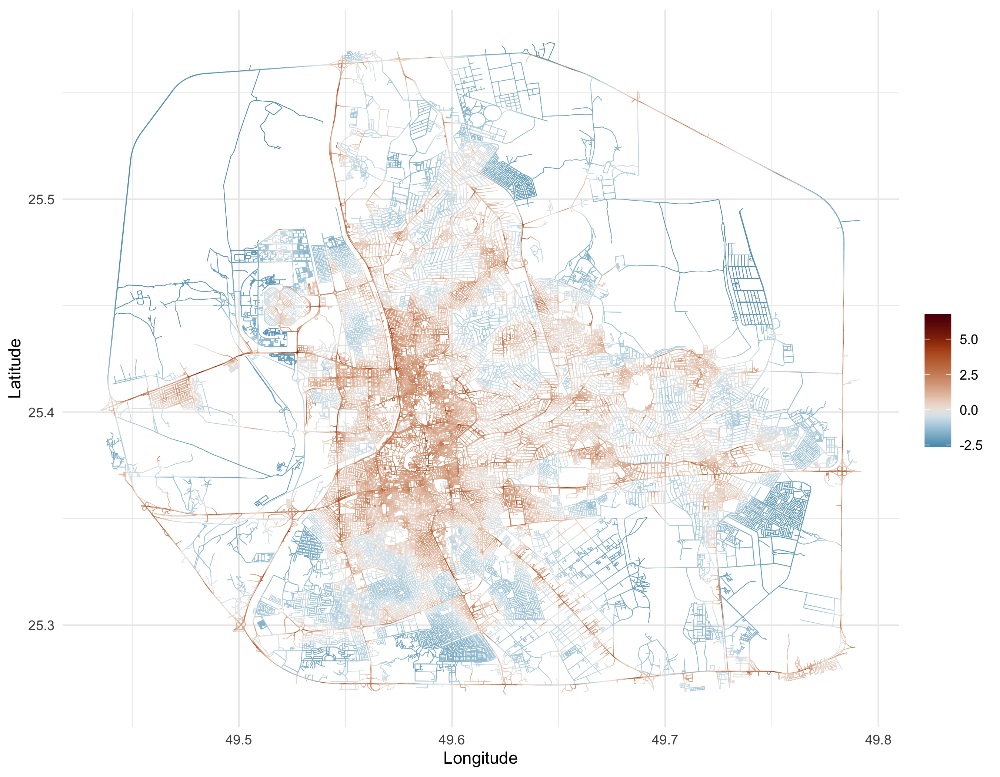
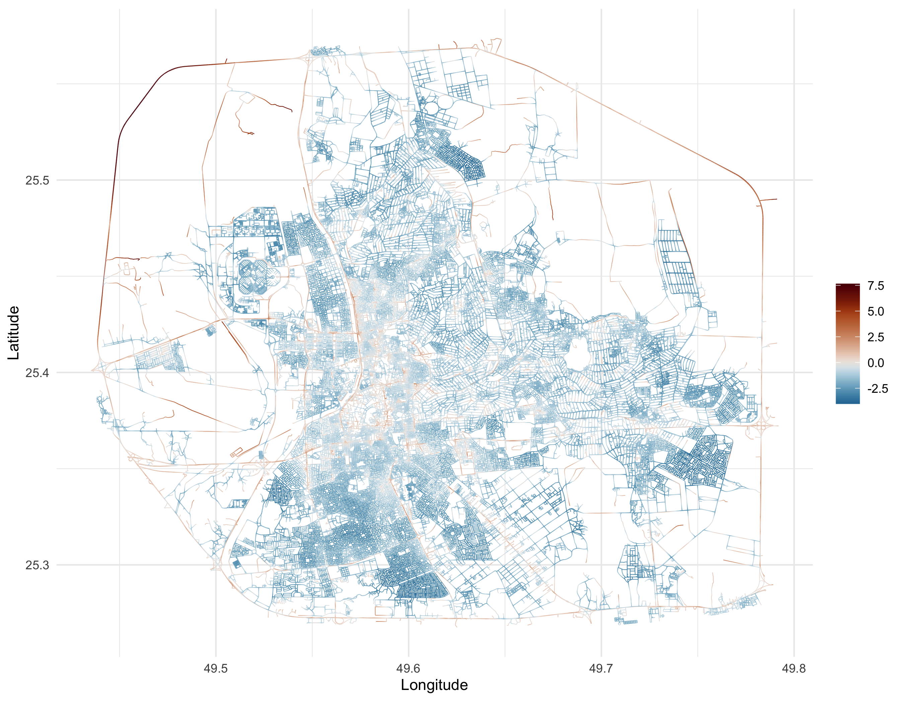

In this section, we fit Model 1 as described in the paper. This model includes only spatial effects, without any covariates. We show two fitting strategies:
lgcp_graph wrapper (our convenient
interface, recommended)We use a mesh with edge-wise spacing of 50 meters — this is the configuration reported in the paper.
This part loads the required libraries, reads the data and graph files, and builds a mesh using the graph structure. The operations prepare the spatial framework needed for the subsequent modeling steps.
library(MetricGraph)
library(INLA)
library(ggplot2)
# Load Graph
data <- readRDS("Data/data_all_reasons_with_distances_7FRC.rds")
graph <- readRDS("Data/graph_mesh_pruned_50m_7FRC.rds")
summary(graph)## A metric graph object with:
##
## Vertices:
## Total: 67221
## Degree 1: 15; Degree 2: 6285; Degree 3: 6002; Degree 4: 18062; Degree 5: 1624;
## Degree 6: 31762; Degree 7: 147; Degree 8: 3316; Degree 10: 8;
## With incompatible directions: 925
##
## Edges:
## Total: 164584
## Lengths:
## Min: 0.002995733 ; Max: 13.26332 ; Total: 15454.57
## Weights:
## Columns: FRC SpeedLimit .weights
## That are circles: 0
##
## Graph units:
## Vertices unit: degree ; Lengths unit: km
##
## Longitude and Latitude coordinates: TRUE
## Which spatial package: sp
## CRS: +proj=longlat +ellps=WGS84 +no_defs
##
## Some characteristics of the graph: Not computed.
##
## Computed quantities inside the graph:
## Laplacian: FALSE ; Geodesic distances: FALSE
## Resistance distances: FALSE ; Finite element matrices: FALSE
##
## Mesh:
## Max h_e: 0.04999975 ; Min n_e: 0
##
## Data: The graph has no data!
##
## Tolerances:
## vertex-vertex: 0.001
## vertex-edge: 0.001
## edge-edge: 0lgcp_graph wrapper (50 m mesh)The lgcp_graph wrapper is the recommended way to fit
LGCP models on metric graphs. It internally handles the integration
weights, the INLA data stack, and the exposure variable E,
simplifying the workflow considerably. We only need to add the observed
events, provide covariates at mesh locations, and specify the model
formula.
graph$compute_mesh_weights()
# Add observations to extract locations
rem.obs <- graph$add_observations(
data, normalized = TRUE, tolerance = 0.6, clear_obs = TRUE,
duplicated_strategy = "jitter"
)
# Extract prepared data and count events
ss <- graph$get_data()
n_accidents <- sum(!is.na(ss$AccidentSeverityId))
# Reset observations to contain only the events (wrapper computes exposures, INLA stack, data internally)
graph$clear_observations()
obs_50 <- data.frame(
y = rep(1, n_accidents),
edge_number = ss$.edge_number,
distance_on_edge = ss$.distance_on_edge,
Intercept = 1,
.group = 1
)
graph$add_observations(data = obs_50, normalized = TRUE, duplicated_strategy = "jitter")
# Provide a manual covariate that is constant along edges (intercept)
manual_cov_50 <- data.frame(
Intercept = rep(1, nrow(graph$mesh$VtE)),
edge_number = graph$mesh$VtE[, 1],
distance_on_edge = graph$mesh$VtE[, 2],
.group = 1,
coord_x = graph$mesh$V[,1],
coord_y = graph$mesh$V[,2]
)
# Build the SPDE model object (used by the wrapper in the formula)
model_iface_50 <- graph_spde(graph, alpha = 1, parameterization = "spde",
LGCP = TRUE, shared_lib="rSPDE")
# Wrapper fit on the 50 m mesh
system.time(fit_iface_50 <- lgcp_graph(
y ~ -1 + Intercept + f(field, model = model_iface_50),
graph = graph,
manual_covariates = manual_cov_50,
interpolate = FALSE,
use_current_mesh = TRUE,
control.compute = list(config = TRUE),
control.fixed = list(prec = list(Intercept = 0)),
control.inla = list(control.vb = list(enable = FALSE), int.strategy = "eb")
))## user system elapsed
## 181.799 4.003 142.950## Time used:
## Pre = 1.4, Running = 50, Post = 11.3, Total = 62.7
## Fixed effects:
## mean sd 0.025quant 0.5quant 0.975quant mode kld
## Intercept -2.626 0.186 -2.99 -2.626 -2.263 -2.626 0
##
## Random effects:
## Name Model
## field CGeneric
##
## Model hyperparameters:
## mean sd 0.025quant 0.5quant 0.975quant mode
## Theta1 for field 1.53 0.031 1.47 1.53 1.59 1.53
## Theta2 for field -1.64 0.215 -2.09 -1.63 -1.24 -1.60
##
## Marginal log-Likelihood: -5586.46
## is computed
## Posterior summaries for the linear predictor and the fitted values are computed
## (Posterior marginals needs also 'control.compute=list(return.marginals.predictor=TRUE)')spde_iface_50 <- spde_metric_graph_result(fit_iface_50, "field", model_iface_50)
result_df_iface_50 <- data.frame(
parameter = c("kappa", "tau"),
mean = c(spde_iface_50$summary.kappa$mean, spde_iface_50$summary.tau$mean),
lower = c(spde_iface_50$summary.kappa$"0.025quant", spde_iface_50$summary.tau$"0.025quant"),
upper = c(spde_iface_50$summary.kappa$"0.975quant", spde_iface_50$summary.tau$"0.975quant"),
mode = c(spde_iface_50$summary.kappa$mode, spde_iface_50$summary.tau$mode)
)
print(result_df_iface_50)## parameter mean lower upper mode
## 1 kappa 0.1984168 0.1247835 0.2881410 0.1916583
## 2 tau 0.2174302 0.2047878 0.2308776 0.2169260# Save workspace snapshot for the 50 m mesh
save.image("Data/5Fit_model1_alpha1_exact_50m_updated.RData")
# # for plotting
# saveRDS(fit_iface_50, "Data/fit_model1.rds", compress = "xz")When fitting with lgcp_graph, the returned object
includes a graph_fitted_data data frame containing
predictions at both observation and integration locations. We can plot
the three key outputs directly using
graph$plot_function:
library(scico)
library(ggplot2)
library(viridis)
# Posterior mean of the log-intensity (linear predictor)
png("Figures/model1_linear_predictor2.png", height = 3 * 700, width = 3 * 900, res = 300)
p1 <- graph$plot_function(data = ".linear_predictor", newdata = fit_iface_50$graph_fitted_data,
vertex_size = 0, edge_width = 0.2, scale_color = scale_color_scico(palette = "vik", midpoint = 0)) + theme_minimal()
print(p1)
dev.off()
# Posterior mean of the latent field u(s)
png("Figures/model1_predicted_field2.png", height = 3 * 700, width = 3 * 900, res = 300)
p2 <- graph$plot_function(data = ".predicted_field", newdata = fit_iface_50$graph_fitted_data,
vertex_size = 0, edge_width = 0.2, scale_color = scale_color_scico(palette = "vik", midpoint = 0)) + theme_minimal()
print(p2)
dev.off()
# Log of fitted values (log-intensity)
fit_iface_50$graph_fitted_data$.log_fitted_values <- log(fit_iface_50$graph_fitted_data$.fitted_values)
png("Figures/model1_log_fitted_values2.png", height = 3 * 700, width = 3 * 900, res = 300)
p3 <- graph$plot_function(data = ".log_fitted_values", newdata = fit_iface_50$graph_fitted_data,
vertex_size = 0, edge_width = 0.2, scale_color = scale_color_scico(palette = "vik", midpoint = 0)) + theme_minimal()
print(p3)
dev.off()Linear predictor:

Predicted field \(u(s)\):

Log fitted values:

For users who want full control over the INLA stack and data
preparation, we show here the equivalent manual workflow. This approach
requires explicitly constructing the integration points, building the
INLA stack, and passing the exposure variable E to
inla().
Before fitting the model, we prepare the spatial observations by
defining integration points and associating them with the mesh. This
segmentation allows the model to differentiate between observed
locations and additional integration nodes. The e field
holds integration weights.
alpha <- 1
atilde <- graph$mesh$weights
# Clear and add observations explicitly for modeling
graph$clear_observations()
# Add the observed accidents
graph$add_observations(
data = data.frame(
y = rep(1, n_accidents),
e = 0,
edge_number = ss$.edge_number,
distance_on_edge = ss$.distance_on_edge,
Intercept = 1
),
normalized = TRUE
)
# Add integration points
graph$add_observations(
data = data.frame(
y = rep(0, length(atilde)),
e = atilde,
edge_number = graph$mesh$VtE[, 1],
distance_on_edge = graph$mesh$VtE[, 2],
Intercept = 1
),
normalized = TRUE
)We build the SPDE model on the graph, construct the INLA stack, and fit the log-Gaussian Cox process without covariates. We use the “spde” parameterization. (If switching to “matern”, see the commented snippet for converting to SPDE parameters.)
# Create the Graph SPDE model (spde parameterization)
system.time(
model_manual_50 <- graph_spde(graph, alpha = alpha, parameterization = "spde", verbose = 1)
)## user system elapsed
## 25.686 0.332 26.112saveRDS(model_manual_50, "Data/model1_graph_spde_50m_7FRC.rds", compress = "xz")
# Build the INLA stack for Manual INLA
data_manual_50 <- graph_data_spde(graph_spde = model_manual_50, name = "field", covariates = c("Intercept"))
saveRDS(data_manual_50,"Data/model1_graph_data_spde_50m_7FRC.rds", compress = "xz")
stk_50 <- inla.stack(
data = data_manual_50[["data"]],
A = data_manual_50[["basis"]],
effects = data_manual_50[["index"]]
)
# Manual INLA fit on the 50 m mesh
fit_manual_50 <- inla(
y ~ -1 + Intercept + f(field, model = model_manual_50),
family = "poisson",
data = inla.stack.data(stk_50),
control.predictor = list(A = inla.stack.A(stk_50), compute = TRUE, link = 1),
control.compute = list(config = TRUE), # needed for excursion sets
control.fixed = list(prec = list(Intercept = 0)), # manual intercept - default prior correction
control.inla = list(control.vb = list(enable = FALSE), int.strategy = "eb"),
E = inla.stack.data(stk_50)$e
)
summary(fit_manual_50)## Time used:
## Pre = 1.42, Running = 50.9, Post = 13.3, Total = 65.6
## Fixed effects:
## mean sd 0.025quant 0.5quant 0.975quant mode kld
## Intercept -2.627 0.187 -2.993 -2.627 -2.26 -2.627 0
##
## Random effects:
## Name Model
## field CGeneric
##
## Model hyperparameters:
## mean sd 0.025quant 0.5quant 0.975quant mode
## Theta1 for field 1.53 0.031 1.47 1.53 1.59 1.53
## Theta2 for field -1.64 0.216 -2.08 -1.63 -1.23 -1.61
##
## Marginal log-Likelihood: -5586.45
## is computed
## Posterior summaries for the linear predictor and the fitted values are computed
## (Posterior marginals needs also 'control.compute=list(return.marginals.predictor=TRUE)')# Summaries of hyperparameters (SPDE)
spde_manual_50 <- spde_metric_graph_result(fit_manual_50, "field", model_manual_50)
# For "spde" parameterization
result_df_manual_50 <- data.frame(
parameter = c("kappa", "tau"),
mean = c(spde_manual_50$summary.kappa$mean, spde_manual_50$summary.tau$mean),
lower = c(spde_manual_50$summary.kappa$"0.025quant", spde_manual_50$summary.tau$"0.025quant"),
upper = c(spde_manual_50$summary.kappa$"0.975quant", spde_manual_50$summary.tau$"0.975quant"),
mode = c(spde_manual_50$summary.kappa$mode, spde_manual_50$summary.tau$mode)
)
print(result_df_manual_50)## parameter mean lower upper mode
## 1 kappa 0.1985296 0.1250797 0.2903511 0.1903451
## 2 tau 0.2174837 0.2047712 0.2308685 0.2170867saveRDS(fit_manual_50, "Data/fit_model1_manual.rds", compress = "xz")
# # If using "matern" parameterization, you may convert to (kappa, tau) via:
# alpha <- 1; nu <- alpha - 0.5
# kappa <- sqrt(8 * nu) / range
# tau <- sqrt(gamma(nu) / (sigma^2 * gamma(alpha) * sqrt(4 * pi) * kappa^(2 * nu)))
# # For "matern" parameterization
# result_df <- data.frame(
# parameter = c("sigma", "range"),
# rspde_version = c(sigma, range),
# mean_exact = c(
# spde_result$summary.sigma$mean,
# spde_result$summary.range$mean
# ),
# mode_exact = c(
# spde_result$summary.sigma$mode,
# spde_result$summary.range$mode
# )
# )
# print(result_df)
# Optional: posterior density plot
# posterior_df_fit_50 <- gg_df(spde_manual_50)
# ggplot(posterior_df_fit_50) +
# geom_line(aes(x = x, y = y)) +
# facet_wrap(~parameter, scales = "free") +
# labs(y = "Density")## R version 4.6.0 (2026-04-24)
## Platform: aarch64-apple-darwin23
## Running under: macOS Tahoe 26.2
##
## Matrix products: default
## BLAS: /Library/Frameworks/R.framework/Versions/4.6/Resources/lib/libRblas.0.dylib
## LAPACK: /Library/Frameworks/R.framework/Versions/4.6/Resources/lib/libRlapack.dylib; LAPACK version 3.12.1
##
## locale:
## [1] en_US.UTF-8/en_US.UTF-8/en_US.UTF-8/C/en_US.UTF-8/en_US.UTF-8
##
## time zone: Asia/Almaty
## tzcode source: internal
##
## attached base packages:
## [1] stats graphics grDevices utils datasets methods base
##
## other attached packages:
## [1] ggplot2_4.0.3 INLA_25.10.19 Matrix_1.7-5 MetricGraph_1.6.0
##
## loaded via a namespace (and not attached):
## [1] gtable_0.3.6 xfun_0.57 bslib_0.10.0
## [4] lattice_0.22-9 vctrs_0.7.3 tools_4.6.0
## [7] spatstat.utils_3.2-3 generics_0.1.4 parallel_4.6.0
## [10] tibble_3.3.1 proxy_0.4-29 pkgconfig_2.0.3
## [13] KernSmooth_2.23-26 ggnewscale_0.5.2 RColorBrewer_1.1-3
## [16] S7_0.2.2 lifecycle_1.0.5 compiler_4.6.0
## [19] farver_2.1.2 deldir_2.0-4 fmesher_0.7.0
## [22] MatrixModels_0.5-4 codetools_0.2-20 htmltools_0.5.9
## [25] class_7.3-23 sass_0.4.10 yaml_2.3.12
## [28] pillar_1.11.1 jquerylib_0.1.4 tidyr_1.3.2
## [31] classInt_0.4-11 cachem_1.1.0 spatstat.univar_3.2-0
## [34] wk_0.9.5 iterators_1.0.14 foreach_1.5.2
## [37] spatstat.geom_3.8-1 Deriv_4.2.0 tidyselect_1.2.1
## [40] digest_0.6.39 sf_1.1-1 dplyr_1.2.1
## [43] purrr_1.2.2 splines_4.6.0 polyclip_1.10-7
## [46] fastmap_1.2.0 grid_4.6.0 cli_3.6.6
## [49] magrittr_2.0.5 dichromat_2.0-0.1 broom_1.0.13
## [52] e1071_1.7-17 spatstat.data_3.1-9 withr_3.0.2
## [55] scales_1.4.0 backports_1.5.1 sp_2.2-1
## [58] rmarkdown_2.31 igraph_2.3.2 otel_0.2.0
## [61] RANN_2.6.2 png_0.1-9 zoo_1.8-15
## [64] evaluate_1.0.5 knitr_1.51 doParallel_1.0.17
## [67] s2_1.1.11 rlang_1.2.0 Rcpp_1.1.1-1.1
## [70] glue_1.8.1 DBI_1.3.0 rstudioapi_0.18.0
## [73] rSPDE_2.5.2.9000 jsonlite_2.0.0 R6_2.6.1
## [76] units_1.0-1